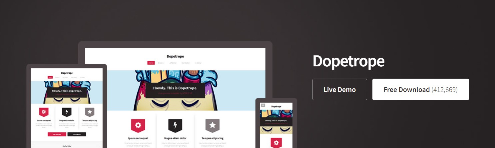
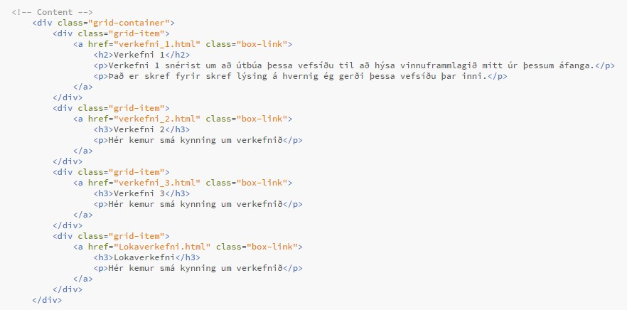
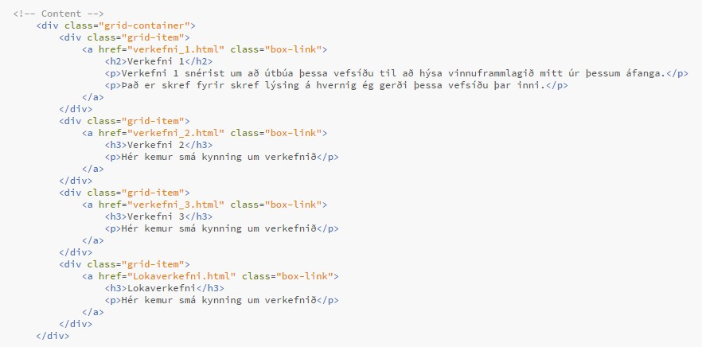
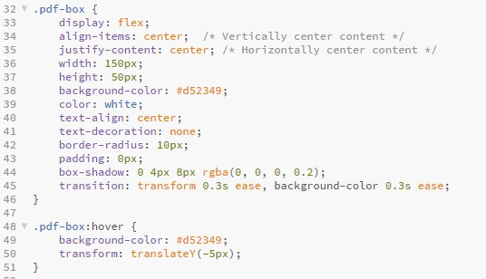
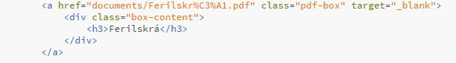

Verkefna 1
Kóða vefsíðuna
Fyrsta sem ég gerði þegar ég hófst handa var að ná í Brackets, þar sem það var bend okkur á að nota Brackets. Í Brackets getur maður skoðað vefsíðuna meðan að maður er að gera hana. Ég sótti hana á http://brackets.io/.
Síðan var að fara á https://html5up.net/ of finna mér template fyrir vefsíðuna. Það er mjög þægilegt að notast við einhvað template því þá þarf maður ekki að byrja frá grunni. Ég ákvað að nota Dopetrope þar sem það er ekki mikið í gangi, allt er fyrir hendi og litirnir eru flottir.
Eftir að maður er komið með það template sem maður er ánægður með, þá þarf að fikta aðeins í kóðanum til að fatta hvað gerir hvað og hvernig maður vill að vefsíðan lítur út. Fyrir Dopetrope var hægt að velja á milli gerða á hvernig síðan sjálf á að vera, ég valdi no-sidebar. Síðan er það að byrja að umbreyta síðunni eins og maður vill hafa hana. fyrst að ég vildi hafa no-sidebar á öllum síðunum um verkefnin þá afritaði ég kóðan af no-sidebar þrisvar sinnum. Ath. að ég var búin að gera "grunn" fyrir no-sidebar áður en ég afritað þær. Ekki síðan gleyma að maður þarf alltaf að segja fyrir valhnappana á topnum á síðunni hvaða síðum við erum á í hvert sinn.
Það er svo sem ekki flókið að kóða vefsíðuna ef maður hefur hana eins og templatið. Þar sem það eru fjögur verkefni í þessum áfanga vildi ég fjóra kassa sem hægt væri að smella á og skrifa stutta lýsingu um verkefnið. Ég fékk mikla hjálp frá Chat-GPT til að útbúa þessa hugmynd, vinstri kóðinn fer í css skránna og hægri í intex skránna og kóðinn endaði sem:
 

Til að setja inn myndir er núþegar búið að gera fall sem hægt væri að kalla á til að setja inn myndir. Eina sem þarf að gera er að segja til hvort myndin ætti að vera til vinstri, hægri eða í miðjunni og einnig hversu marga pixla hún á að vera.
Ég vildi einnig bæta við hnappi sem hægt væri að smella á og svo opnast ferilskráin mín í öðrum glugga. Aftur fékk ég hjálp frá Chat-GPT til að útbúa þennan hnapp, vinstri kóðinn fer í css skránna og hægri í intex skránna:
 Ég gerði vefsíðuna meira og minna svona, en ég þurfti aðeins að fiffa til stærðina á kassanaum, hnappinum fyrir ferilskránna og myndirnar þangað til að ég var ánægður með vefsíðuna.
Birta vefsíðuna á netið
Núþegar að vefsíðan er tilbúin, þá er næsta skref að birta vefsíðuna á netinu. Til að birta vefsíðuna á netið notaðist ég við Github og Git. Fyrst þarf að búa til reikning inn á Github og ná í Git. Síðan fylgdi ég þessu myndbandi. Síðan er það að gera repository inn á Github, vert er að nefna að repository-ið þarf að enda á .github.io svo hægt sé að birta vefsíðuna.
Næsta skref er að opna Git bash í möpppunni þar sem allar skránnar fyrir vefsíðuna eru og kalla svo á eftir farandi skipanir:
- git init
- git add .
- git config --global user.email "patrekurm01@gmail.com" .
- git commit -m "first commit"
- git remote add origin https://github.com/Patrekur01/.github.io.git
- git push -u origin main
Nú ættu allar skránnar að vera komnar í repository-ið, svo næst er að fara í repository-ið og fara í settings>GitHub Pages>Source og velha svo Master Branch og ýta á vista. Nú er allt komið og ættir að fá hlekk af vefsíðunni. Hér er hlekkurinn af repository-inu mínu.
Það sem ég vil fá úr námskeiðinu og lokaverkefni
Ég er mjög ánægður að það er verið að henda okkur í djúpu laugina og láta okkur búa til hluti frá grunni. Mig langar að takast á við þau vandamál sem munu koma upp við hönnun og útfærslu á hlutunum sem ég mun hanna og gera. Þótt ég er ekki alveg með á hreinu hvað mig langar að gera, þá er ég samt með nokkrar hugmyndir. Einnig er mjög spennandi að fá smá reynslu af því að búa til hluti sem maður hefur hannað og sjá hvað gengur og hvað gengur ekki.
Ég er ekki komið með hugmynd að lokaverkefni en þar sem þetta er hópaverkefni, þá treysti ég á það að við munum koma með góða hugmynd og reyna okkar allra besta að hanna og útbúa það sem við ætlum að gera í lokaverkefninu. Samt sem áður þá er ég með nokkrar pælingar varðandi einstaklings verkefnin.